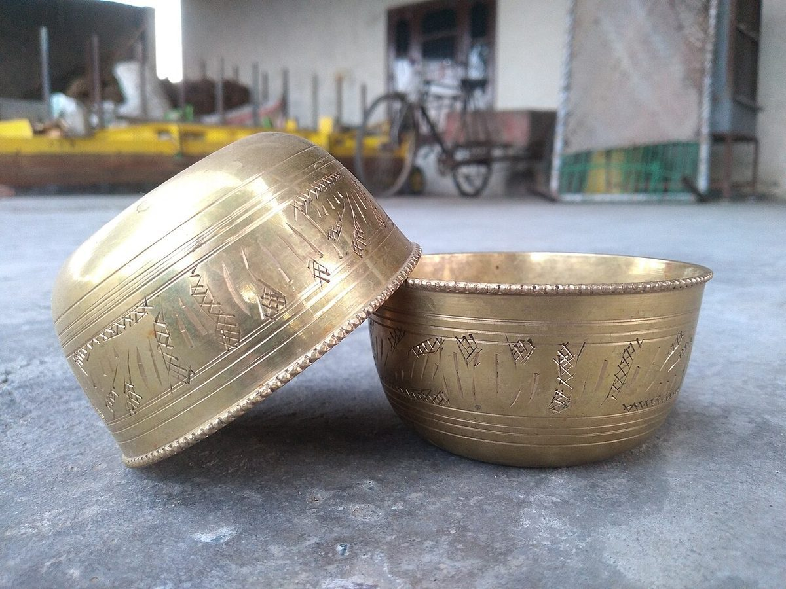

口コミ
こんなお店かもしれない
カフェという業種から自然に想像できる声を、制作側が創作したものです。
以下は制作側が考えた創作のイメージ例で、制作側の創作であり、実在のお客様の投稿ではありません。実際の口コミ・評価とは関係ありません。
鍋のそばで少し待ってから、温かい一杯をゆっくり飲む。そんな静かな時間を過ごせそうなお店です。
寒い日に立ち寄って、湯気の立つカップで手をあたためたくなるような雰囲気を想像しました。ひとりでも入りやすそうです。
友人と近況を話しながら、のんびり過ごせそうな場所です。店名のとおり、日が昇って沈むまで居たくなるかもしれません。
